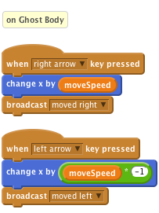
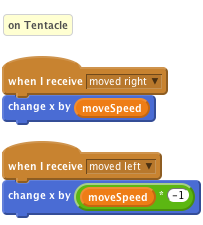
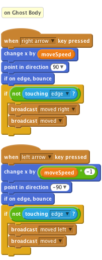
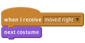

Scratch Card - Movement
Level 4
broadcastmoved right broadcast,

broadcast also means if we want to change the way our movement
Here we’re telling the body to face the direction it
is moving (make sure your sprite orientation is set
to “only face left-right”) and to stop and turn around
if it collides with the edge of our screen. You will have
also noticed that we have wrapped our broadcast
in an if block, we only want the other body parts
to move if the body isn’t on the edge of the screen.
If you decide to add any animation to the
movement, make sure that any associated
movements take just as long. i.e. if moving a leg
to the left takes 1 second due to an animation, all
other left movements must take 1 second too
(use a wait block to make sure they’re all in step).
You can also animate your body sprite using
costume changes, by triggering the change every
time a movement broadcast is received.
